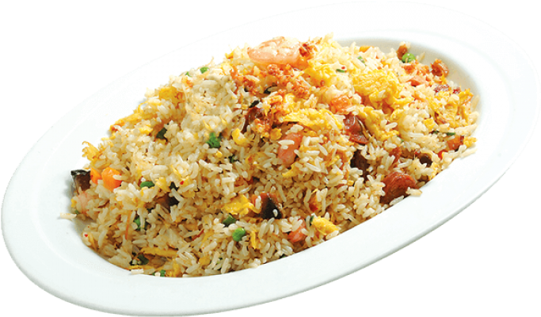

Fried Rice

Background
This recipe is the most authentic recipe that has ever existed. The
veggies perfectly fried, the rice perfectly fried, and the taste of soy
sauce. It is a classic.
Recipe
Ingredients
- Frozen peas and carrots
- Rice
- Vegetable Oil
- Soy Sauce
- 1 Egg
Directions
- Heat oil in pan over high heat
- Cook the frozen veggies until they are thawed out and warm.
- Add cooked rice and soy sauce, tossing to combine.
-
Crack an egg into the pan and stir everything together to cook the egg.
- Serve immediately